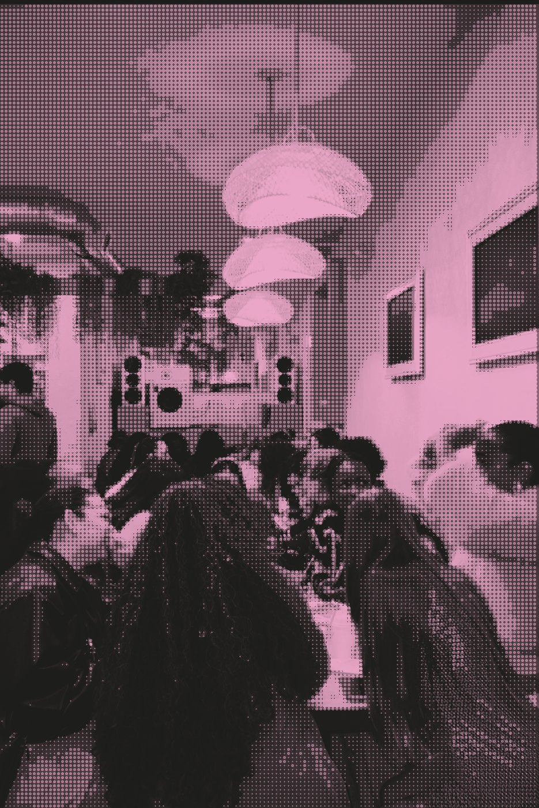

01
The room
We host The Créer Social Sessions, intimate IRL gatherings for founders, creatives and local business owners, with brand partners at the table. Getting the right people in a room is what we do best.
Why Créer Social
Créer Social is a Los Angeles strategic partnerships and advisory firm. We gather founders and small business owners in real life, we build our own business on AI every day, and we know how to tell the story so the next business wants in. That is the whole job of an OpenWorks partner. We are already doing it.
The fit, in one line
We host The Créer Social Sessions, intimate IRL gatherings for founders, creatives and local business owners, with brand partners at the table. Getting the right people in a room is what we do best.
Our agency runs on systems we built with AI: client operations, partnership frameworks, outreach engines and live websites. We teach from what we use, not from slides.
Vashti documents the work on her own TikTok, @hello_vashti, and on @creersocial. Every business we help becomes a story that brings in the next one.
What OpenWorks needs, and what we already have
Receipts
Every one of these is in daily use. Every one is something a small business owner could have by the end of an OpenWorks day.
One start-here hub, a single client tracker with a live dashboard, discovery call guides, intake forms and a branded proposal template the whole team can edit. Built so a new hire can run a client from first call to wrap-up without dropping a ball.
An AI-assisted outreach engine for a nonprofit fundraiser. $69K was raised before the night even started.

Custom, mobile-first websites for the talent we represent, built and launched in days instead of months.
Our framework for representing talent in brand partnerships: positioning, rate logic, pitch materials and deal tracking, rebuilt for each new client in hours.
Sign-ups, RSVPs, waitlists and follow-ups for the Sessions, all organized in one place so nobody slips through.


The Créer Social Sessions
Our Sessions bring founders, creatives and local business owners together around a real table, with brand partners who make the night feel generous. An OpenWorks workshop fits right inside this format.
The partnership plan
Four build days and one community workshop, every month. Here is what a typical month looks like.
Businesses come in through our community, our partners and our content, with a short intake so we know their biggest time drain before we meet.
A quick audit of how they sell, serve and follow up. We pick the one workflow where AI saves the most hours.
On a build day we make it together: a follow-up system, a content plan, a client tracker, a better website. They leave with it working.
The monthly workshop brings everyone into one room to learn, share wins and meet each other. Community keeps people using what they built.
With permission, their before and after becomes content, which brings in the next business. The loop feeds itself.
The first 90 days
What every business walks away with
Built-in reach
Vashti already documents her life and her business in public. OpenWorks LA would live naturally inside that content, so the program gets seen by the exact owners who need it.
Her direct-to-camera series, BRAND NÜ, follows a real transformation across four pillars. AI for small business fits right inside it.
The agency channel turns each month into a clean record: who we helped, what they built, and when the next workshop opens.
It also gives the businesses we help something they rarely get: their story told well, in front of a Los Angeles audience that buys local.
From a client
[Kelly's words about her media kit go here, once she approves.]
Kelly Nicole Wood · Hair stylist and founder

Who you'd be partnering with
Vashti brings together creative vision, business strategy, and deep-rooted understanding of what makes people, brands, and ideas undeniably magnetic.
She worked at some of the top luxury fashion houses, including Salvatore Ferragamo, then built her own sustainable label with no outside investors and took it to Oprah's Favorite Things. She has spoken on Shopify panels about brand and scaling, works with the US Black Chambers accelerator, and was selected by USC students to develop the first phase of the Créer Social app. Today she advises founders from early stage to companies doing $100M+ a year.





Créer Social × OpenWorks Los Angeles
The community is here, the systems are built and the calendar is open. We would love to bring OpenWorks to the founders and small businesses we already serve.